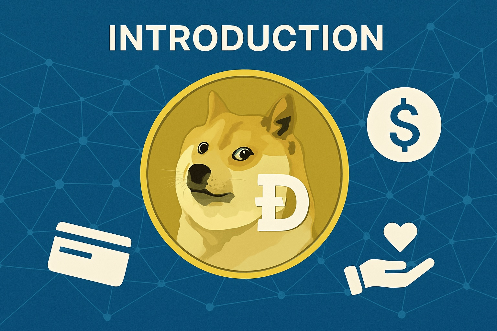
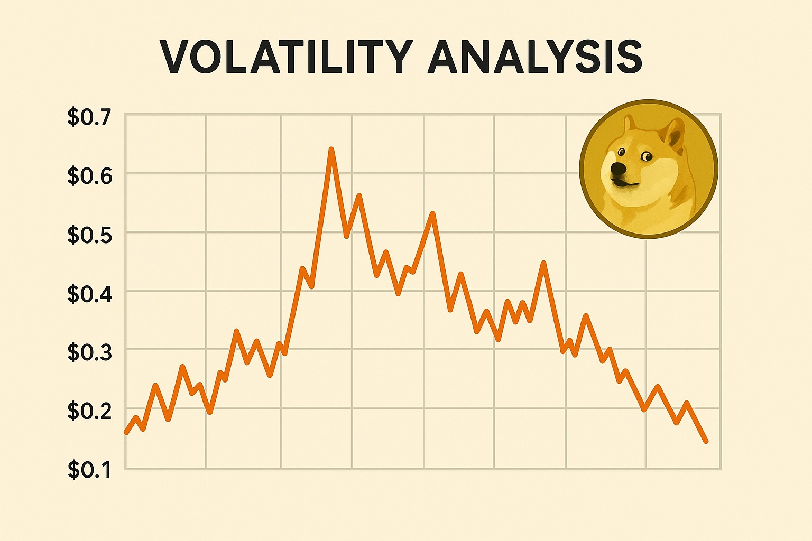

Dogecoin Price Forecast for End of 2025: Comprehensive Review and Key Takeaways
The material in this article is intended solely for educational purposes and does not constitute investment advice. Cryptocurrency trading involves significant risk.
Introduction
As of August 20, 2025, 01:13 AM EEST, Dogecoin (DOGE) trades near $0.2246, retaining its position as the top meme coin in the crypto space. Initially created in 2013 by Billy Markus and Jackson Palmer as a playful take on Bitcoin, Dogecoin has grown into a well-known asset, propelled by a strong community and endorsements from personalities like Elon Musk. With a market capitalization of $33.66 billion and a 24-hour trading volume of $2.16 billion, DOGE remains speculative yet influential. This article delivers a full review of DOGE’s price prospects heading into late 2025, considering both bullish and bearish scenarios, main drivers of growth, and potential risks based on ongoing market dynamics and ecosystem trends.
Current Situation
On August 20, 2025, Dogecoin is priced around $0.2246, showing a 2.87% decline over the last week but a 6.72% rise over the past month. Over 30 days, DOGE recorded 15 positive sessions out of 30, with 8.23% volatility, pointing to moderate price swings. The Fear and Greed Index at 60 reflects growing optimism, fueled by strong community engagement and online buzz. Year-over-year, DOGE has gained 117.62%, moving from $0.1032 to its current level. Since its 2013 launch price of $0.0002993, it has achieved substantial growth yet still trades well below its $0.7376 peak in May 2021. Recent whale buying of 600 million DOGE in just 48 hours highlights continued “buy-the-dip” behavior among major investors.
Price Predictions for End of 2025
Estimates for Dogecoin by December 2025 differ greatly due to its speculative nature. Bearish projections see DOGE dropping to $0.14–$0.20 if a 30–50% crypto-market correction unfolds in early 2025 or if enthusiasm fades. More conservative predictions place DOGE at $0.25–$0.39, supported by ongoing payment adoption and persistent online promotion. Bullish views suggest DOGE could surge to $0.65–$1.58 if the market rebounds between February and April 2025 or if major endorsements — such as from Elon Musk — intensify. Optimistic analysts, referencing potential ETF approvals and integration with platforms like X for tipping, expect DOGE to hit $1.00–$1.44 by late 2025.
Factors Driving Price Growth
- Community Strength: Dogecoin’s loyal community of over 2.4 million Reddit members drives awareness and adoption through social platforms.
- High-Profile Support: Backing from celebrities such as Elon Musk boosts DOGE’s visibility and speculative demand.
- Payment Use: Rising acceptance of DOGE for tipping and online payments, potentially through platforms like X, adds to its practical utility.
- Market Momentum: A projected crypto-market uptrend in early-to-mid-2025 could accelerate DOGE’s price growth.
- ETF Approval Potential: Pending SEC decisions on Dogecoin ETF applications by Bitwise and Grayscale, expected by June 2025, may attract institutional investors.
Risks and Downward Factors
- High Volatility: A possible 30–50% market correction in early 2025 could weigh heavily on DOGE, impacting investor sentiment.
- Limited Core Utility: Unlike Ethereum or Solana, DOGE has a less developed ecosystem and relies mainly on speculation.
- Regulatory Pressure: Stricter rules for meme coins worldwide could reduce DOGE’s accessibility and growth potential.
- Rising Competition: Emerging meme coins could divert retail interest away from DOGE, limiting upward momentum.
- Inflationary Token Supply: With 5 billion new coins minted annually, DOGE’s unlimited supply may slow its long-term value growth.
Volatility Analysis
Between July and August 2025, DOGE declined from $0.2406 to $0.2246, showing a short-term pullback with 8.23% volatility. Despite a 6.21% monthly drop, DOGE has gained 117.62% year-over-year since August 2024. Technical indicators are mixed: the 50-day average trends lower, hinting at near-term weakness, while the 200-day average still signals a longer-term uptrend. Whale buying and dip-buying behavior suggest resilience. A forecasted recovery in early 2025 could aid DOGE’s price, especially with adoption for payments or ETF approval. Its strong community and speculative appeal make it a candidate for further appreciation, though volatility will remain a challenge.
Conclusion
By late 2025, Dogecoin’s price is expected to hover between $0.25 and $0.65, with the possibility of hitting $1.00–$1.58 in a favorable market backed by strong community support, celebrity endorsements, and ETF approvals. Nevertheless, investors should account for volatility, DOGE’s limited utility, regulatory changes, competition from new meme coins, and its inflationary nature. Careful research and proper risk management are vital before making any Dogecoin investment.